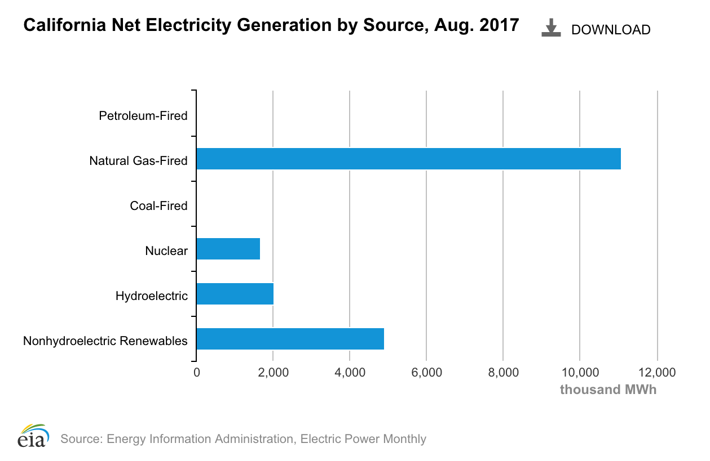

Analysis
For our analysis, we tried to segregate our research about the consumer perceptions into two main categories: the environmental externalities relating to the operations of electric vehicles and the environmental externalities relating to the production of electric vehicles.
The main takeaway that we got about the environmental effects of operating electric vehicles is that the comprehensive emissions are heavily dependent on how the electricity used to power the vehicle is sourced (ex: burning coal vs hydroelectric power). This is variable by region but we determined that on average, if the electrical grid is powered by a renewable energy source, then the emissions from operations are likely lower than those of a gas-powered vehicle.
The main takeaway that we got about the environmental effects of manufacturing electric vehicles is that the production process is typically less environmentally friendly relative to the production process for traditional automobiles. The factor making it so much less environmentally friendly is the mining of cobalt, which is an essential ingredient for the lithium ion batteries used in electric cars. The process involves leaving large quantities of ammonium sulfate in ten foot deep holes, with very few clean-up precautions in order.
In our survey, we tried to analyze what college student perceptions about how environmentally friendly electric cars were throughout their life-cycle. Since electric cars are traditionally thought to be comprehensively more eco-friendly, we wanted to form the survey analysis in a way that allowed students to realize what aspects of the manufacturing and operations processes could be potentially harmful to the environment. This way, they can demand reform and improvements to the processes which have become relatively stagnant in recent years. Through doing this, we are able to see the common misconceptions surrounding electric vehicles.According to our survey results, about 70% of participants reported believing that electric vehicles always result in less emissions than traditional gas-powered vehicles since electric vehicles do not release exhaust into the environment. However, the comprehensive effects of an electric vehicle’s emissions depend on how the local electric grid (used to fuel the car) sources its electricity. If the electric grid sources it energy through the burning of coal or other environmentally harmful means, electric cars may not be more environmentally friendly. However, very few electric car drivers source their electricity from coal-powered electrical grids. Below, is a graph that depicts the sources of electricity generation for electric cars in the state of California.

Another common misconception for the class relates to the percentage of electric vehicle owners that have access to rooftop solar energy in the US. About 95% of the class believed that less than 24% of electric vehicle owners have access to rooftop solar energy. However, the actual figure is 36%.This figure includes both current electric vehicle drivers and potential new buyers based on a younger age demographic of people who have expressed interested in buying an electric car in the near future. This figure should continue to increase as several west coast states such as California and Oregon have mandated solar panel use for certain structures.
In our survey, we tried to analyze the perception of the efficiency of the cobalt mining industry. More than seventy percent of respondents reported believing that of the ammonium sulfate contaminated source in which cobalt is extracted from, at least 2% can be utilized for the production of electric vehicles. However, Wired magazine conducted a study on a mining company in China that extracted the rare materials necessary to produce many of Tesla’s electric vehicles. In order to extract the materials, this company has to pour ammonium sulfate down ten-foot holes in the ground and the rare metals only account for 0.2 percent of what gets pulled out of the ground. The other 99.8 percent, which is now contaminated by toxic chemicals, is dumped back into the ground, resulting in potentially irreversible effects on the local ecosystem.
Another misconception from the survey relates to the water required to extract lithium from the ground. According to our survey results, about 80% of the class was under the impression that it takes less than 1,000 gallons of water to bring one ton of lithium to the surface during the extraction process in South America. However, in actuality, it takes about 500,000 gallons of water to extract each ton of lithium. The Andes mountains are extremely dry but mining lithium from the mountains requires an extreme amount of water. It takes 12 to 18 months for the water to evaporate after extraction, creating runoff that is disruptive to the natural ecosystem.
According to our survey results, about 52% of the class correctly believes that lithium ion batteries are 95% recyclable. While lithium batteries are said to be 95% recyclable, the process of recycling these batteries is a difficult process. During their lifetime, the batteries endure irreversible damage. They need to be taken apart and have the lithium removed. The electrolyte portion of the batteries consists of a variety of additives. This part of the battery is known to be explosive when handled incorrectly or exposed to high temperatures. This means the recycling process would have to dismantle to batteries safely. Because of the process of recycling lithium batteries, only 2% are recycled in Australia.